Contents
- What is PMX?
- Manifest Permissions and AppOps
- Permission References
- App List
- Permission List
- Search
- Scheduled Check
- Permission Watcher
- Permission View
- Batch Operations
- Integration with WhatsRunning
- Using PMX with ADB
- PMX Versions
- FAQs
- Why do I need to use PMX?
- Why PMX requires root or ADB access?
- My device isn't rooted. How can I use PMX?
- What are hidden APIs?
- Why does PMX not run or work properly on the latest Android?
- Why does PMX not work properly on OEM operating systems or custom ROMs?
- How does PMX change other apps permissions?
- Do the permissions remain changed after ADB is turned off, or root is denied, or PMX is uninstalled?
- Why can't I change XYZ permission?
- I've changed a permission but it's not working. Why?
- Why do some AppOps cannot be changed?
- Why don't I see XYZ app in packages list?
- Why don't I see XYZ permission in ABC package?
- Why don't I see XYZ AppOp in ABC package?
- What should I select for Privileged Daemon UID in Advanced Settings? System or ADB?
- What are invalid permissions in Exclusion Filters?
- What are extra AppOps in Exclusion Filters?
- What are different AppOp modes and which one should I use?
- What's the difference between Ignore and Deny AppOp modes?
- Why cannot I set AppOp mode to foreground?
- What does READ_MEDIA_AUDIO permission do?
- What does WAKE_LOCK permission do?
- How can I change INTERNET permission?
- What are Fixed permissions?
- Can I change System-Fixed permissions?
- How can I change Signature|Privileged permissions?
- How can I change the permissions of framework apps?
- What is UID mode in AppOp permissions?
- Can I control Android's "Remove permissions if app isn't used" feature from PMX?
- Why do I get a lot of Bad ROM popups?
- What do the "Hide From List" buttons (on long press) do?
- Why does scanning apps takes so long?
- Is there a complete list of all permissions available with explanation?
- How to use the app in work profile / multi-user environment?
- How can I translate PMX to my language?
- Are you going to add Shizuku support to PMX?
- How does PMX compare to XPrivacyLua? Can they replace each other?
- Can PMX auto remove permissions when an app is closed, like Bouncer does?
- Can I get notified when a new app is installed?
- When a new app is installed, can PMX disable its permissions by default?
- Why PMX requires INTERNET permission?
- How much privacy friendly PMX is?
- Is PMX spying on me using ADB over network?
- Is PMX misusing root privileges to collect my data?
- I think PMX is useless. Why was it created?
- Downloads / Screenshots
- Ratings / Reviews
- Contact Us
More FAQs
What is PMX?
It's the eXtended Permission Manager app for Android which makes it easy to set and review desired permissions on installed apps, keeping track of any unwanted changes. Giving control on your device, it enables you to protect your privacy and save your resources like battery usage.
PMX provides all the scattered (or otherwise unavailable) permission-related information and controls on a single screen so that you can watch and control them in a comprehensive and convenient way.
Using PMX you can:
- View / grant / revoke all the manifest permissions which can or cannot be set using app's settings screen. The list of permissions which cannot be set from GUI is very long.
- View all the AppOp permissions which usually don't have any GUI setting. E.g. VIBRATE and READ_CLIPBOARD AppOp permissions. You can set the desired AppOps mode e.g. Foreground.
- View all permissions requested by an app which are not changeable.
- View last used time for many AppOp permissions.
- Change System-Fixed permissions which cannot be changed by any other means.
- Real-time watch for permission changes or perform scheduled scans.
- Sort apps and permissions by many parameters including install date and number of permissions.
- Make complex search queries in apps and their permissions.
- Enable / disable apps.
Also see Github README and detailed app description on Play Store. Or try it out. It's free, for the most part.
Manifest permissions and AppOps
Please check What are manifest permissions and AppOps?
Permission References
Suppose you spent a whole Sunday setting wanted permissions on 200+ installed apps. And:
- The next month you upgraded your device, or installed a new ROM.
- Or you uninstalled and reinstalled a few of the apps for some reason.
- Or you granted a few permissions, as requested by the apps.
Will you go through the whole hassle once again?
No you don't need to. You can make PMX remember your desired permission states. Set a permission, make it GREEN, and done. It will take only a few moments to look at all installed packages and figure out which permissions aren't correctly set e.g. by making a quick search: :RED|:ORANGE or !:GREEN. See Search for more details.
Three reference states are:
-
ORANGE state indicates that no reference value is set.
-
GREEN indicates that reference value matches currently set value.
-
RED indicates that reference value and set value differ.
Reference states can be backed up and restored conveniently. After a restore, there's a convenient way to set all permissions according to restored references. See Batch Operations.
There are multiple ways you can set a reference:
- Long press a permission and tap the "Set Reference " / "Clear Reference" button.
- There's a top menu option on every app's permission list screen to set or clear all references.
- (Pro only) Set references in bulk with Batch Operations.
- (Pro only) Enable the "Auto-set reference" preference under Settings -> General settings. So whenever you change a permission state, it's also set as a reference.
App List
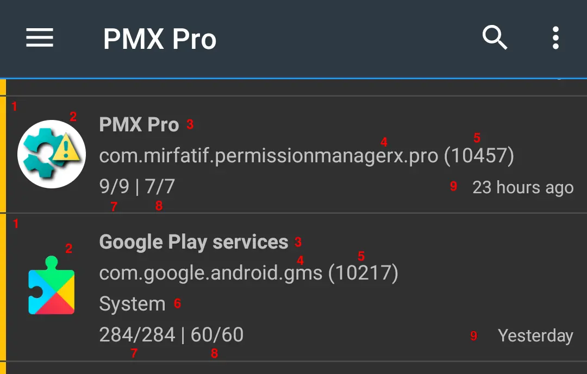
- Colored strip at the left indicates reference state
- App icon
- First line shows package label
- Second line shows package name and
- UID
- Third line (optionally) shows package's state: Critical (Framework), Framework or System app. Also if the app is Disabled. No state is shown for Enabled, User apps.
- Last line shows count of visible out of total manifest permissions and
-
AppOps permissions.
Invisible permissions are those excluded in Exclusion Filters.
- If sorted by install or update time, the last line also shows date or time on the right side.
Permission List
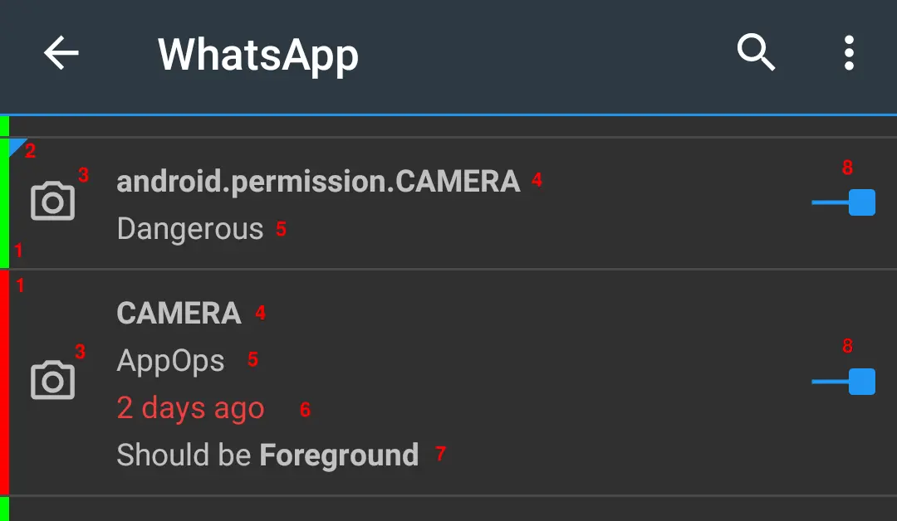 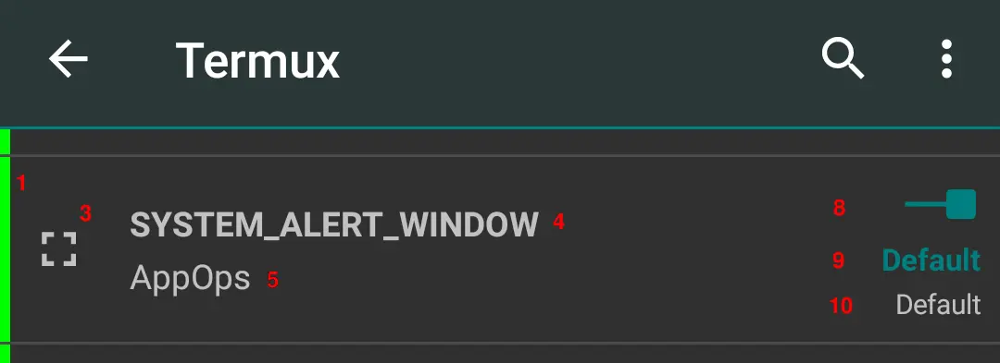
- Colored strip at the left indicates reference state
- Manifest permissions show a flag in the upper right corner
- Permission icon
- First line shows permission name
- Second line shows permission's protection level: Normal, Dangerous, Signature, Development, Privileged, Fixed, AppOps or Unknown. Also if AppOp is per Package or per UID. And if it is an Extra AppOp (never excluded in filter settings).
- Third line (in case of AppOp) shows last access time
- Fourth line (in case of AppOp) shows the referenced value if it doesn't match the current set value.
- Switch to change the permission state
- Current state (in case of AppOp)
- Default indicates that the AppOp state has never been changed
Search
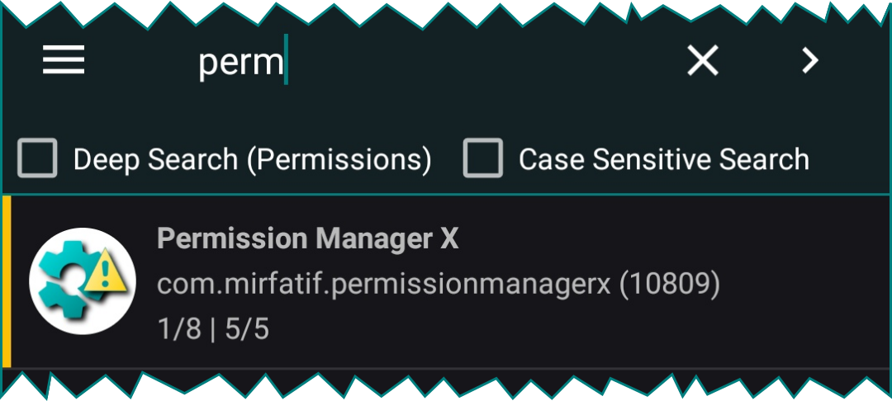
Normally package label, name and UID are searched from visible list.
With Deep Search, permission name and other parameters are queried.
Note that the Exclusion Filters are effective when making search.
You can use the following special keywords in search:
-
App state:
:Critical :Framework :System :User :Disabled
-
Reference state:
:ORANGE :GREEN :RED
-
Permissions protection level:
:Normal :Dangerous :Signature :Internal :Development :Privileged :Fixed :AppOps :Unknown
-
Per UID AppOps:
:UID
-
AppOps with last access time:
:TIME
-
Extra AppOps (never excluded in filter settings):
:EXTRA
-
& (AND), | (OR) and ! (NOT) operators:
Foo|Bar&Baz
Foo&!Bar&!Baz
Paid version also shows search suggestions (if set in preferences) to ease the search process.
Scheduled Checker (Pro only)
Do you want to keep track of any unwanted changes to the permissions for all the installed apps? Scheduled Check can do this for you at regular intervals (in minutes, hour or days).
Set Permission References to GREEN and leave the rest to PMX. If any permission is found changed (with RED state) or when a new app is found installed (with ORANGE state permissions), PMX reminds you that something needs your attention.
Additionally, if configured in preferences, Scheduled Check can auto-revoke granted permissions with an informatory notification.
Permission Watcher (Pro only)
Some apps do not work without having a certain permission granted. But you want to grant the permission for the time only when you are using the app, and revoke the permission as soon as you leave the app.
Permission Watcher does exactly this. As soon as you leave the app, or after the set time has passed, it revokes an app's permissions (manifest and AppOp) on its own, or asks you to do so, depending on the preferences you've set.

Permission Watcher also notifies you to set permissions on newly installed apps (in primary user / owner profile only).
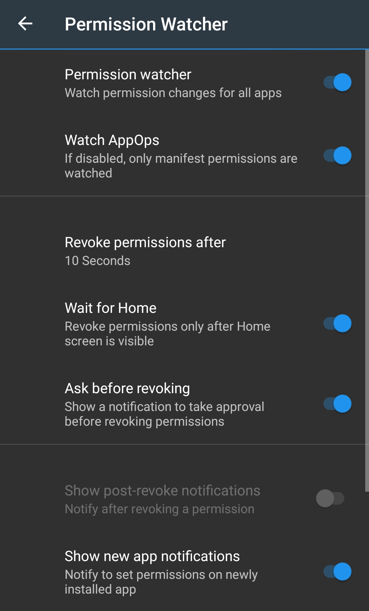Note:
-
Only the permissions with RED reference state are revoked, not those with the ORANGE state. So you MUST first set the reference states. See Permission References.
-
Manifest permissions only with Dangerous protection level are watched. Those are the ones usually changed. Permissions with Signature|Development protection level or those with System-Fixed flag set are not watched, though they are changeable.
-
PMX watches only User-installed or normal System apps, not Framework apps. Changing them might brick the device.
-
On some devices Permission Watcher may not work reliably for apps in the secondary user / profile. Using it in combination with Scheduled Checker is recommended.
Why starting Permission Watcher fails?
Are you using ADB? Some OEMs remove permission OBSERVE_GRANT_REVOKE_PERMISSIONS or SET_ACTIVITY_WATCHER from Shell package. If this is the case with you, we are sorry. This is something we cannot fix. On such devices Permission Watcher can work only with root. See the note at the start of Using PMX with ADB.
Permission View (Pro only)
Permission View shows a list of all permissions with a count of how many apps are using these permissions.

- Permission name
- Protection level
- App count
- Granted permission count out of total permission count. The latter can be bigger than the app count because some apps may use an AppOp permission twice (in UID mode).
When you select a permission, a list of apps using this permission shows up:

- Permission name
- Permission description
- Flag indicating that the permission is granted
- App icon
- App label
- Package name
- App UID
When you select an app, the permission list opens where you can change the permission state.
Batch Operations (Pro only)
Permission Profiles
- Create and edit permission profiles (templates).
- Apply a profile to a selected list of apps.
- Select a Default Profile to apply on newly installed apps (if Permission Watcher is enabled).
Operations with References
-
Set Permissions
Go through a list of selected apps and make RED permissions GREEN by setting their states according to the reference values. Permissions with Green and Orange states are ignored.
This option is usually helpful when you have just restored a backup and there are many permissions with RED state.
-
Set References
Go through a list of selected apps and make RED and ORANGE permissions GREEN by setting their reference values according to the permission states.
This option is usually helpful during an initial setup. You have just installed the PMX app and spent a few hours setting permissions. This option will make them all GREEN in a single tap.
-
Cleanup References
Cleanup permissions references database. Unused references will be removed.
If there's a huge list of unused references, a cleanup may improve loading of app list.
-
Reset References
Reset permissions references database. All references will be removed.
Not meant to be used normally. But in case if you want to start from scratch.
Integration with WhatsRunning
PMX is integrated with WhatsRunning so you can open one from the other.


So from PMX you can switch to WhatsRunning to find out if an app with restricted permissions is still running. If yes, in what state it is and how much resources it is using.
Similarly, from WhatsRunning you can switch to PMX to find out what permissions a running (or dead) app is granted.
This is particularly helpful when analyzing the effect of permissions like RUN_IN_BACKGROUND.
Using PMX with ADB
Limitations of ADB
ADB is not as powerful as root is. In our case, for instance, PMX takes more time to build the list of apps when it's running with ADB.
Additionally, on some OEM ROMs the ADB functionality might be crippled due to lacking permissions or other restrictions. You can check the current status of what ADB can do in About -> Privileges (menu item):
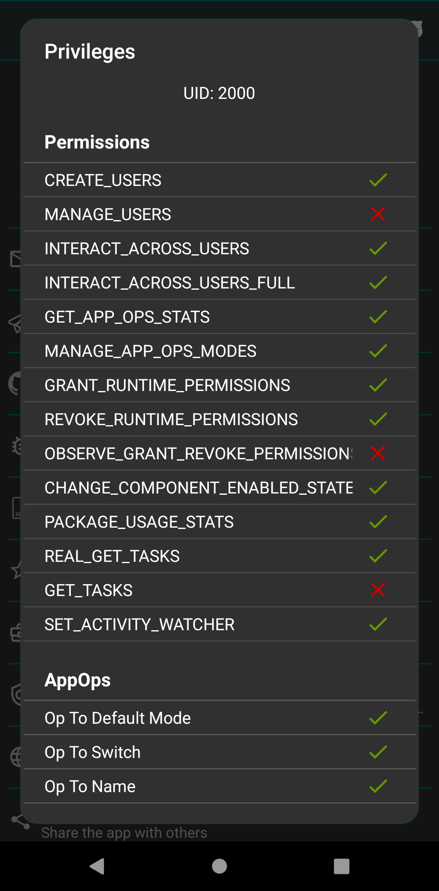Unfortunately we cannot do anything about it. And therefore some features are available only on rooted devices.
Specifically the following actions are possible only on rooted devices:
- Changing system-fixed permissions
However some OEMs add extra settings to control ADB's privileges. For instance you need to uncheck "Disable Permission Monitoring" on Oppo phones and "Allow granting permissions" in Security Settings on Xiaomi phones. See this question for more details.
The following instructions apply to near-AOSP ROMs. Customized ROMs might have different or missing settings.
See Why does PMX not work properly on OEM operating systems or custom ROMs?
Why does ADB not work on Amazon Fire TV?
Amazon has blocked the ability for apps to establish a local ADB connection (see details here). So PMX won't work on these devices without root, unfortunately.
Android 10 and below
So here we start how you can make PMX work with ADB.
If your device is not rooted, you need to turn Wireless ADB on before using PMX. Some devices have ADB over Network or Wireless Debugging setting available in Developer options:

If you don't have this setting on your device, you need to connect the device to a USB host like PC once after every reboot.
Unhide Developer options screen:
-
Go to Settings -> About and tap Build number five to seven times.
Developer options should appear directly under Settings or in Settings -> System at the bottom.
Enable wireless debugging:
-
Enable Android debugging in Developer options.
-
Connect the device to the PC with a USB cable.
-
On PC open a terminal window (or command prompt on Windows) and run:
adb tcpip 5555
You must have adb executable available on your PC to run the above command. If not, here's the download link.
Optional steps for verification:
-
Disconnect the USB cable from the device.
-
Connect your device and PC to a common Wi-Fi network.
-
Get the IP address of the device (usually in Wi-Fi settings or in Settings -> About), say it's 192.168.1.1.
-
On PC run:
adb connect 192.168.1.1
-
Run again:
adb shell id -u
It should print 2000 (or 0).
Connect PMX to ADB:
-
Run PMX app and check ADB Shell in drawer. Enter port 5555 and tap connect.
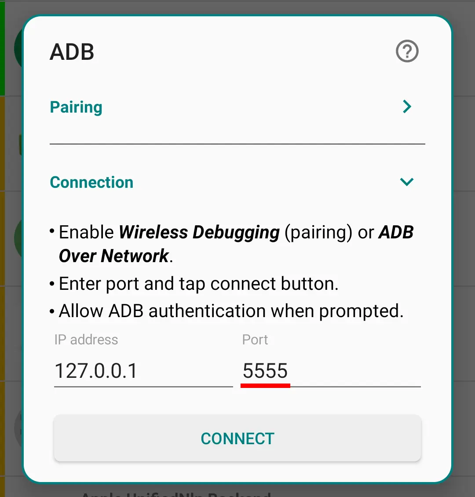 -
Allow USB Debugging if asked.
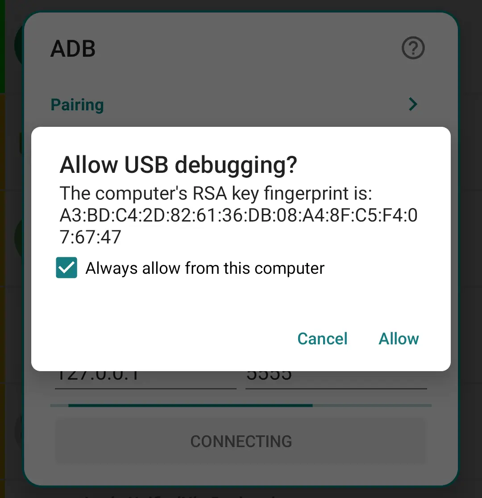
Leave the Android debugging enabled.
For more details see this.
Android 11 and above
On Android 11 and above, it's possible to turn on Wireless Debugging without connecting to a PC.
-
Connect your device to a Wi-Fi network.
-
Open PMX and Developer Options in Split-Screen mode. See instructions above how to unhide Developer Options.
-
Enable Wireless debugging and Disable ADB authorization timeout in Developer Options. The latter ensures that you don't have to repeat the next two steps (pairing) again and again.
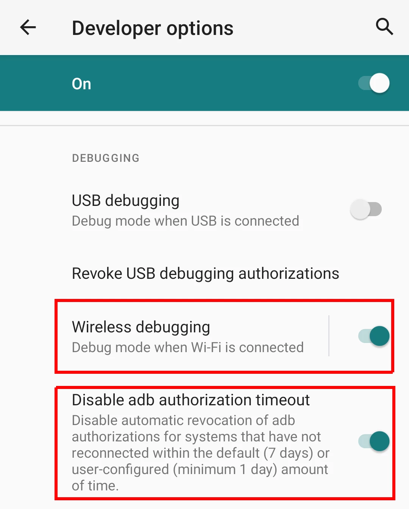 -
Open Wireless debugging and tap on "Pair device with pairing code". Note the pairing code and port number.
-
In PMX check ADB Shell in drawer, enter both parameters in the shown fields, and tap pair.
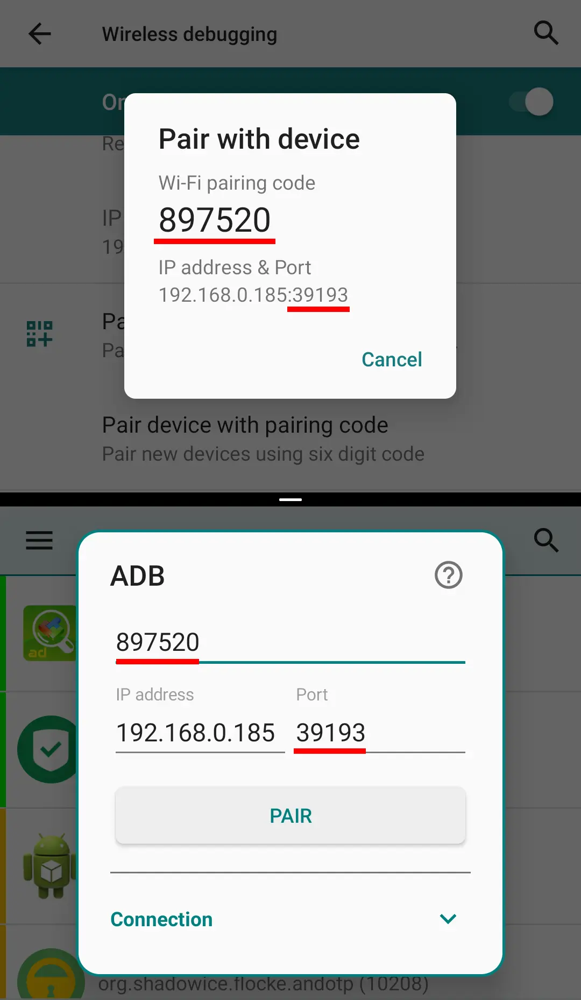 -
After successful pairing now it's time to connect. Enter the new port number from Wireless debugging in the shown field and tap connect.
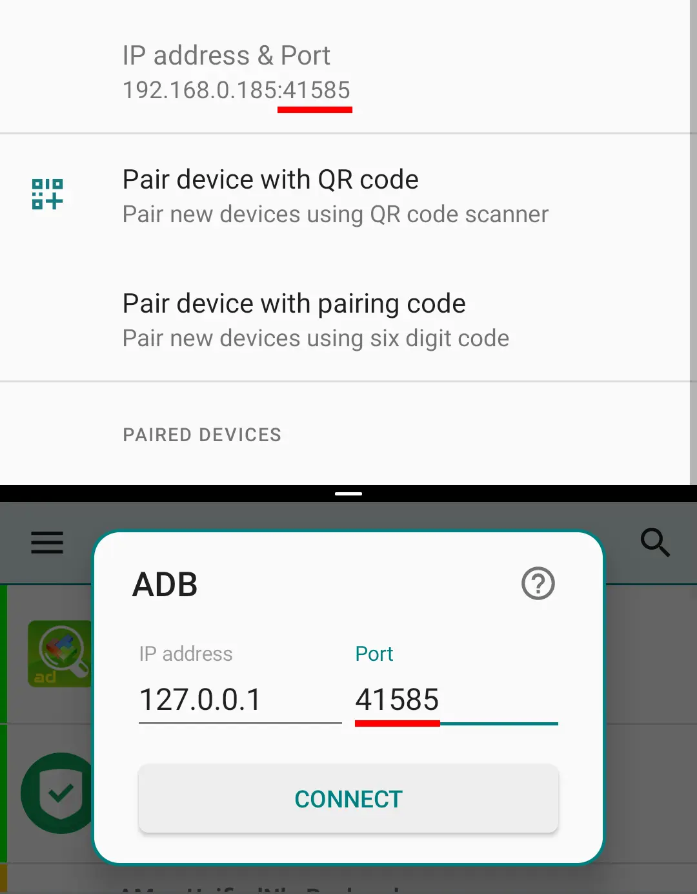
Now you can leave the Wireless debugging enabled. Or better disable it and leave the USB debugging enabled.
If you entirely turn off the debugging in Developer options, or after every reboot, you need to repeat the last step.
For more details see this.
Here's a 1 minute video guide:
ADB Connect Service
If Permission Watcher or Scheduled Checks are enabled, PMX connects to ADB on device boot. But if ADB has not been enabled by then, PMX will no more try to connect to ADB unless explicitly done by opening the app.
But if you enable ADB on boot in an automated way, you can notify PMX by sending the following Intent that ADB has been enabled:
am startservice -n com.mirfatif.permissionmanagerx/.fwk.AdbConnectSvcM --ei "com.mirfatif.pmx.extra.ADB_PORT" 5555
Make sure to use the correct package name depending on the app version (see PMX versions). For the standalone Pro version, the command should be:
am startservice -n com.mirfatif.permissionmanagerx.pro/com.mirfatif.permissionmanagerx.fwk.AdbConnectSvcM --ei "com.mirfatif.pmx.extra.ADB_PORT" 5555
Read here how to use the am tool to start an app's service.
PMX Versions
PMX is available in two variants: Paid and Free.
Paid version is available in two variants: Play Store and Pro.
Paid version is released on Play Store and Github. Free version is released on GitHub, F-Droid and some other sources. Latest APKs for both variants are also posted in the Telegram Channel.
There's no free version on Play Store.
Pro version can be installed along with any other version on a device. But no other two versions can be installed together (due to same package name). One must be uninstalled before installing the other one.
Free version available on IzzySoft is the same as released on Github and posted in the Telegram channel. But the one available on official F-Droid repo has different signatures. So it cannot be installed over the former two, and vice versa.
In between the major releases some test (beta) releases are also published in the Telegram channel only.
You can update the Play Store version to the latest stable release either from Play Store or by installing the APK file posted in the Telegram channel with -ps in the file name. Sometimes Google team may take up to 24 hours before the update is live in Play Store.
You can update the Pro version to the latest release by installing the APK file from Github or the Telegram channel with -pro in the file name.
You can update the Free version to the latest stable release either from GitHub (or F-Droid; from wherever you installed it) or by installing the APK file posted in the Telegram channel without -ps / -pro in the file name.
Paid version installed by merely downloading the -ps.apk or -pro.apk file from the Telegram channel won't work if you haven't purchased the app.
Once a new version is available for update, PMX app - when launched - shows a notification to download the update (provided that you've enabled the update check in settings). Play Store app also shows update notification according to your settings.
If you've already downloaded and installed the latest release from the Telegram channel, you won't get update notification in the app and Play Store won't show update available.
Free version is completely open-source and free. Source code is available on GitHub. Anyone can view and download the code and build the app. We respect users' privacy, so there's nothing hidden, there are no back-doors, no trackers, no ads. And we don't collect users' data and information for any kind of analytics, profiling or for the sole purpose of selling. Even submitting a crash report is also at user's discretion, though highly recommended.
One can purchase the paid version just to make a donation and/or to use the paid-only features. Other methods of making a donation are available in the Free / Pro version under Donate section. Developers can also support the app development by contributing to the source code e.g. by fixing a bug. Users can help us make the app better by testing the beta releases, reporting any crashes or glitches, suggesting improvements and new features, or translating the app to their native language.
Paid Features
Paid version includes everything that's in the Free version, plus the following extra features which are also listed in the Play Store description:
- Sort apps and permissions by different parameters
- Scheduled check to notify bad reference states
- Watch for changes to permissions and revert them
- Auto revoke granted permissions with RED states
- Make changes to critical apps and permissions
- Multiple users / work profile support
- Auto create backup file on changes
- Batch Operations (Profiles)
- Permissions description
- Search suggestions
- Theming options
- Permissions View
FAQs
Why do I need to use PMX?
Because:
- PMX provides all the scattered (or otherwise unavailable) permission-related information and controls on a single screen so that you can watch and control them in a comprehensive and convenient way.
- There's no official tool available in stock Android to change AppOps. Only a subset of manifest permissions are exposed to user in permission settings. PMX exposes all the permissions in raw form. Related: Manifest permissions and AppOps.
- PMX makes it easy for you to keep track of any unwanted changes to permissions.
- Giving control on your device, PMX enables you to save device resources like battery and network bandwidth, and protect your privacy. You are not entirely left to the mercy of app and ROM developers. Read this article to get an idea.
- PMX can watch permission changes in realtime, reverting them automatically when you stop using an app. Or it can perform scheduled scan of permissions. So you don't have to remember things.
- PMX makes it easy for you to backup and restore permissions state of installed apps so that you don't have to tweak an app's permissions again and again.
Please also see What is PMX?
Why PMX requires root or ADB access?
Android won't allow a normal user app to change other apps' manifest or AppOp permissions, even its own. Only reading AppOps without root or ADB is possible provided that hidden APIs are not blacklisted on your device, which is very unlikely on Android 9+.
That's why we run a separate process with high privileges to circumvent the restrictions.
By default, the background process (daemon) is run with ADB UID (2000) or (if rooted) System UID (1000). On rooted devices UID can be changed in Advanced Settings.
My device isn't rooted. How can I use PMX?
Use PMX with ADB. Please do read the note at the start. There might be some limitations on some devices.
What are hidden APIs?
The core functionality of PMX revolves around Hidden APIs. These are the capabilities required to perform tasks (like granting / revoking permissions) which can only be performed by privileged system apps. So these capabilities aren't available to normal user apps. But PMX uses these capabilities with the help of root or ADB. Usually a user should not be concerned about this.
If you are interested in underlying details please read here.
Why does PMX not run or work properly on the latest Android?
PMX relies on Android's hidden APIs or non-SDK interfaces (see What are hidden APIs?) which are not documented (on Android Developers) unlike standard APIs. So with every new Android release, we have to go through the Android source code to find out which APIs have broken (changed or removed).
Also, it takes time to fix the broken APIs; sometimes weeks, sometime months. And it's not guaranteed that we'll always be able to fix the broken APIs. Sometimes Google on purpose makes it difficult or impossible for us to keep using the hidden APIs.
Therefore it's not possible for us to make the PMX immediately work on every new Android release (particularly in beta phase) as long as the final AOSP source code is not publicly released (on Code Search or Git Repository).
PMX's final supported Android version is stated in app description on GitHub and Play Store. When you run the app on an unsupported version for the first time, it shows a warning like this:
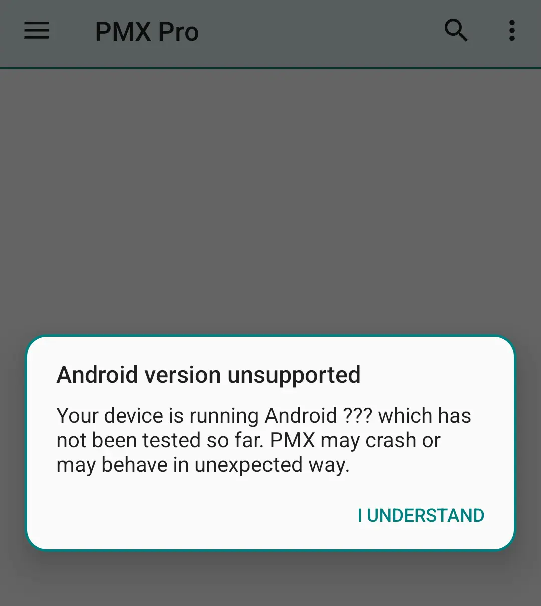Why does PMX not work properly on OEM operating systems or custom ROMs?
PMX relies on Android's hidden APIs or non-SDK interfaces (see What are hidden APIs?) which are not documented (on Android Developers) unlike standard APIs. So we need access to the source code of your ROM to know exactly how the hidden APIs work.
Well, AOSP (which is developed by Google) is open-source. But if your OEM or ROM developer makes some changes to AOSP for the customization purpose, we've no way to know exactly what changes they have made to the stock AOSP code. We're quite helpless here. And this fact is stated in app description on GitHub and Play Store. Sorry.
How does PMX change other apps permissions?
PMX itself cannot and does not grant or revoke other apps' permissions. In fact no third party app is privileged to do that. It's the Android OS which controls apps' permissions. PMX just sends a request to the Android framework to change a permission's state. Now it's entirely up to Android how much it honors our request. Not all permissions are changeable. And if you are not able to change a permission's state using PMX, you won't be able to change it in any other way either.
Do the permissions remain changed after ADB is turned off, or root is denied, or PMX is uninstalled?
PMX itself cannot and does not grant or revoke other apps' permissions. In fact no third party app is privileged to do that. It's the Android OS which controls apps' permissions. PMX just sends a request to the Android framework to change a permission's state.
So once a permission is changed, it makes no difference if you uninstall PMX or drop its privileges. The permission remains in whatever state it is, unless changed again by you or the operating system.
Why can't I change XYZ permission?
Manifest permissions with only Dangerous protection level (and a few others) are changeable. AppOps not dependent on some other AppOp are changeable. That's how Android works, we can't change the behavior. See Manifest permissions and AppOps.
Additionally, PMX protects some critical framework apps and permissions; changing them might brick the device. See the related question.
I've changed a permission but it's not working. Why?
After changing a permission successfully, if you are not getting the desired results i.e. it reverts back immediately or after some hours or days, it's the Android operating system to be blamed. Please see:
As you use apps, Android may change their permissions. And unfortunately we do not have a way to prevent this. Permission Watcher and Scheduled Checker may help in this regard.
Why do some AppOps cannot be changed?
Sometimes you see "AppOp mode not changed". It means that Android rejected the request to change the AppOp mode. You cannot change it no matter what method or app you use. There could be multiple possible reasons.
- Some AppOps are dependent on their corresponding manifest permissions. So they cannot be changed independently. For instance you may not be able to deny READ_CONTACTS AppOp if android.permission.READ_CONTACTS manifest permission is granted.
- Some AppOps are only used by Android for compatibility (e.g. LEGACY_STORAGE) and they don't actually control anything. If we explore their underlying working it's revealed that granting / revoking such permissions doesn't make sense.
- Some permissions cannot be changed if the app is running on or is targeting an older or newer Android version.
- Some OEM ROMs behave weird when it comes to AppOps. See Why does PMX not work properly on OEM operating systems or custom ROMs?
- Many AppOps can have 2 modes: package mode and UID mode. It's possible that one can be changed while the other cannot be.
Actually there come many more explanations if we dig every app and permission individually (which doesn't sound practical). As stated above, PMX doesn't change other apps' permissions on its own. So even if for some unknown reason Android doesn't change a permission, or reverts it back immediately, there's nothing we can do to force it because these are the limitations at Android end. Rather, I should say this is how Android works.
Related:
- What are different AppOp modes and which one should I use?
- Why cannot I set AppOp mode to foreground?
Why don't I see XYZ app in packages list?
Please check Exclusion Filters. Almost all the stock Android packages are excluded by default. You can exclude / include any package you want from / to visible list.
Why don't I see XYZ permission in ABC package?
Please check Exclusion Filters. Permissions which are not changeable are excluded from the visible list by-default.
Why don't I see XYZ AppOp in ABC package?
Please check Exclusion Filters if XYZ AppOp is excluded from the visible list. Or ABC package might not be using XYZ operation. You don't need to be worried about this.
But if you want to see the XYZ AppOp for all apps, go to Exclusion Filters -> Extra AppOps, never excluded and check XYZ AppOp in the list.
For instance, write _CLIPBOARD in search box (with Deep Search box checked) and you'll get all apps which used (or tried to use) READ_CLIPBOARD or WRITE_CLIPBOARD permission. Timestamp is also shown (but not for all AppOps).
So if the app you are concerned about isn't in the search results, check both AppOps in the Exclusion Filters list mentioned above.
What should I select for Privileged Daemon UID in Advanced Settings? System or ADB?
It matters only if you are using root, or ADBD on your device is running with root (which is not the case with the final user devices).
Preferably use System (UID 1000) as it allows more privileges than ADB (UID 2000). E.g. changing "System-Fixed" permissions is possible only when running as system.
What are invalid permissions in Exclusion Filters?
If an app is requesting a manifest permission but it's not declared (provided) by Android framework or any of the installed packages, it's an invalid permission. For instance com.android.vending.BILLING is an invalid permission if Play Store app is not installed on your device.
What are extra AppOps in Exclusion Filters?
Not all AppOps are being used for all installed apps. But you can enforce an AppOp to any app. Selected Extra AppOps appear in all apps' permission lists so that you can set them.
What are different AppOp modes and which one should I use?
Normally you should Allow or Ignore. Or you may want to allow an operation only when the app is in Foreground (only on Pie+). Deny is the intense version of Ignore which may crash the requesting app. Default is the system's default behavior which differs for different AppOps.
Please note that not every AppOp mode can be possibly set on every AppOp for every app. For instance on recent Android releases CAMERA and MICROPHONE are allowed to be used by user apps only in foreground (even if set mode is Allow). Similarly, some AppOps can never be set to Foreground mode.
Related: Why do some AppOps cannot be changed?
Official documentation: AppOpsManager.
What's the difference between Ignore and Deny AppOp modes?
Ignore silently fails while Deny throws back an error to the app which the app might not be expecting and may crash. You should normally be using Ignore.
Why cannot I set AppOp mode to foreground?
Foreground mode cannot be set for all AppOps. Even when set, it may not give expected results.
Related:
Please note that the permission mode "Allow only while using the app" does not alway set the AppOp mode to "Foreground":
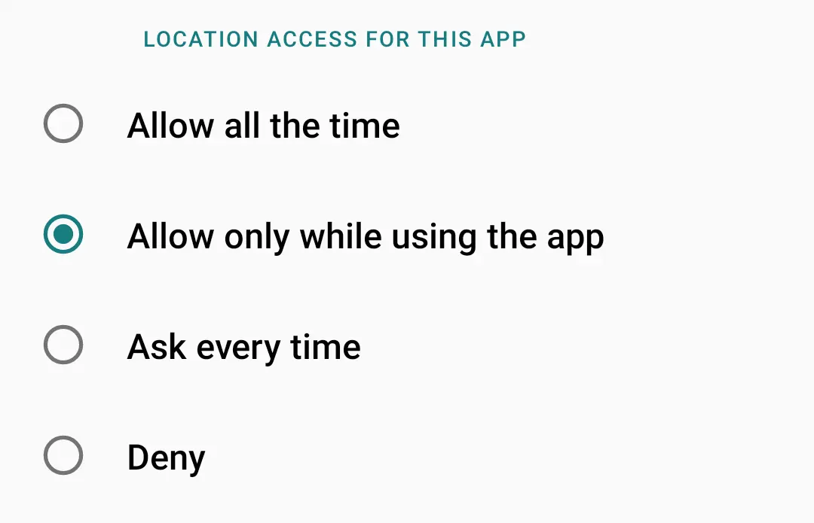Normally we see only two states for a manifest permission: granted and revoked. But Android uses flags to split these two states into many sub-states. For some permissions the same phenomenon is used to achieve the "grant only when the app is visible" behavior. AppOp permission is not used in this case.
For more details see official documentation of background access and foreground access.
For simplicity, PMX does not watch permission flags at the moment. But in future an option might be added to also track changes to permission flags even if granted / revoked mode remains unchanged.
What does READ_MEDIA_AUDIO permission do?
READ_MEDIA_[AUDIO|VIDEO|IMAGES] are recent addition to AppOps list, added in Android 10 (IIRC) as a part of Android's Scoped Storage implementation. Source code states: Read media of audio type. In simple terms it controls apps (which use MediaStore) access to audio files in external shared storage.
What does WAKE_LOCK permission do?
Apps hold wakelock to keep the device awake i.e. not entering Doze mode.
How can I change INTERNET permission?
Android doesn't allow changing all permissions, like those with the Normal protection level (e.g. INTERNET) or those with Fixed flag or Signature protection level (usually System or Framework apps). See Manifest permissions and AppOps.
What are Fixed permissions?
System-fixed permissions are granted to the preinstalled apps by the OEMs or ROM developers. They are not meant to be changed. But if your device is rooted, PMX can change system-fixed permissions.
Policy-fixed permissions are granted (or denied) by the IT admins on managed devices. They cannot be changed.
User-fixed permissions are fixed by the user. If a user denies a permission a few times when the app requests for it, the operating system marks the permission as user-fixed and shows no more prompts to the user to grant the permission if the app asks for the same permission again. This kind of fixed permissions can be changed easily whenever the user wants.
How can I change System-Fixed permissions, Signature|Privileged permissions, or the permissions of framework apps?
If your device is rooted, in paid version you can "Allow Critical Changes" in Advanced Settings to make changes to the permissions with the System-Fixed flag, protection level Signature|Privileged, or those of framework app. But it's not recommended to play with the System and Framework apps. You can brick your device.
What is UID mode in AppOp permissions?
It's a mode of an AppOp permission which indicates that changing this AppOp will also affect other apps (with the same UID), if installed. See sharedUserId.
Can I control Android's "Remove permissions if app isn't used" feature from PMX?
Yes. This feature is available since Android 11. It's also labeled as "Pause app activity if unused" on some devices.

To change this option from PMX:
- Go to Exclusion Filters -> Extra AppOps list and check AUTO_REVOKE_PERMISSIONS_IF_UNUSED.
- Back on the main screen, type AUTO_REVOKE_PERMISSIONS_IF_UNUSED in the top search bar. Make sure that deep search is enabled in search settings.
- Set the mode Allow or Ignore for whichever apps you want.
You can also use Permission View or Batch Operations in place of step 2 and 3.
Why do I get a lot of Bad ROM popups?
OEMs make huge changes to stock AOSP code (which is developed by Google). So the AppOps framework on some custom / OEM ROMs returns unexpected results which PMX cannot understand. You can ignore these popups, but they mean that the functionality is somewhat limited.
See Why does PMX not work properly on OEM operating systems or custom ROMs?
What do the "Hide From List" buttons (on long press) do?
They both just hide the app or the permission from the visible list. If you don't want to change a permission for any app, you may hide it. And it won't appear for any app. To unhide it again go to Exclusion Filters settings.
Similarly, you can exclude an app from the visible list if you are not concerned about its permissions.
 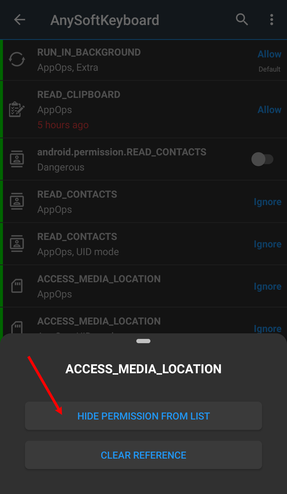
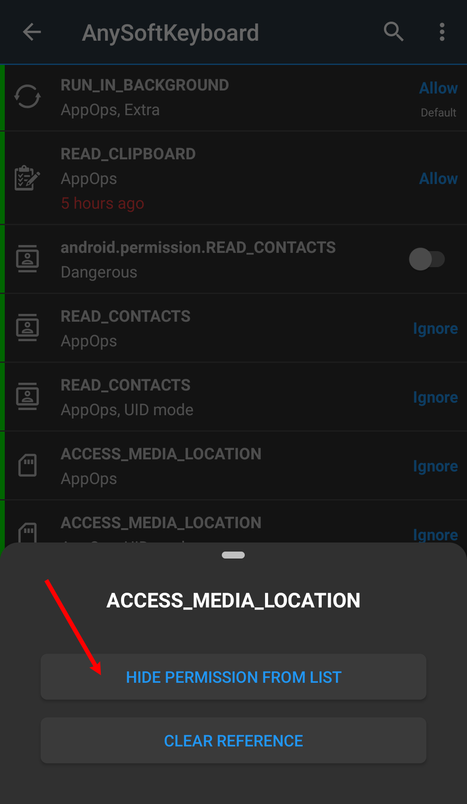
Why does scanning apps takes so long?
PMX gets a lot of information about apps. It includes package label, name, icon, UID, and its state (framework, system, user, disabled). For manifest and AppOp permissions the information includes permission name, state (granted, revoked, allow, ignore, deny, foreground, default), protection level (normal, dangerous, signature, development, privileged, fixed, AppOp) and AppOp's last access time. Then the set value of every permission is compared with the reference value and the reference state is decided (red, green or orange). After scanning all the permissions for every app, the count of visible vs total permissions and app's reference state is also shown in package information.
Speed also depends on how much CPU and RAM your device spares for the apps. ROMs investing more on UI (like MIUI) are slower. Also ADB is usually slower than root.
You can exclude as much information as you can in Exclusion Filters to speed up the scan process.
Another thing that may speedup the loading of app list is to cleanup the references database in Advanced Settings.
Is there a complete list of all permissions available with explanation?
There's no complete list of permissions with description, at least in my knowledge. PMX Pro version shows a brief description of common manifest and AppOp permissions.
There are third party resources like this one by Izzy. Android's official developer site and source code are also good sources for learning.
With every new Android release some new permissions are added, and some also get obsolete. Also, not all permissions are needed to be taken care of by every user.
How to use the app in work profile / multi-user environment?
Pro version supports work profiles and multiple users. Select a user from drop-down menu.

How can I translate PMX to my language?
Join the translators team on Crowdin. Let me know which language you are interested in and I'll add that to the project.
Major translators will be credited by adding their names to the app in About section.
Are you going to add Shizuku support to PMX?
No. Shizuku is not supported. It adds unnecessary design complexity. And we lose the freedom to develop our app independently without heavily relying on an additional third party app. PMX natively supports root and ADB.
How does PMX compare to XPrivacyLua? Can they replace each other?
PMX is not designed to replace but to compliment projects like XPrivacyLua. They have different design goals.
XPrivacyLua hacks Android's standard functionality by hooking into internal APIs, using Xposed which replaces some Android libraries with the hacked ones. So we get extra functionality like feeding fake data to the apps and get notified of permission related events which we cannot know of by any other normal means.
PMX on the other hand is not targeted to be a framework mod. It provides convenient access to some privileged APIs which normal apps cannot use. It's not hacking Android's standard functionality by any means. Most of the tasks PMX performs can also be performed from commandline, except a few like changing System-Fixed permissions.
Rooting and Xposed are two strict requirements for using XPrivacyLua. PMX doesn't require any of the both for the most part. Both aren't available for many devices or many users don't consider them as an option due to the technical difficulties involved, warranty void, SafetyNet failing and other issues.
Here's a related issue.
Can PMX auto remove permissions when an app is closed, like Bouncer does?
Yes. See Permission Watcher and Scheduled Check. But it doesn't use Android's Accessibility feature to perform taps / clicks on screen on user's behalf (though it's a good feature without requiring any extra setup). PMX relies on root or ADB privileges. So it can do far more (see What is PMX?) than what can be done using Accessibility features.
If you are using ADB, and not root, Permission Watcher may not work on some devices. Please read the note given at the start of Using PMX with ADB.
Can I get notified when a new app is installed?
Yes. See Permission Watcher.
Since Android 8 it's not possible for background (not running) apps to get notified of the new app installed event. So we've to run a foreground service (with persistent notification) to receive this event. Or you may consider using Scheduled Checks to keep things in place.
When a new app is installed, can PMX drop its permissions by default?
Yes. But there's nothing to drop. All the revocable manifest permissions are already revoked and stay revoked unless the user grants them explicitly. As far as AppOps are concerned, many of them don't appear until at least once used by the app e.g. VIBRATE and READ_CLIPBOARD. Many others (e.g. READ_CONTACTS) have their corresponding manifest permissions already dropped, as pointed out. So it's not predictable at the time of app installation which AppOps should be removed.
But a notification is displayed when a new app is installed (if using Permission Watcher) so the user can set permissions one by one or apply a profile.
Why PMX requires INTERNET permission?
The standalone Pro version requires internet connection for license verification. The other two versions - Free and Play Store Pro - can work completely offline. Though Play Store app needs internet connection for license verification.
Optional use of android.permission.INTERNET permission:
- Check for app updates. You can disable this in app settings.
- Fetch help contents of this webpage that you view in drawer -> Help.
Local (on-device) use of android.permission.INTERNET permission:
Android does not allow apps to create network sockets without having the INTERNET permission even if they are meant to be used only locally and not for an internet connection. PMX has two uses of local (on-device) connections (the ability to create localhost sockets at 127.0.0.1) for Inter Process Communication (IPC):
- PMX starts a background process with root / ADB privileges and talks to that process over network socket. After the initial handshake, both processes start talking over Binder. We have no better way to do this because Android doesn't allow apps to talk over UNIX domain sockets either.
- If your device is not rooted and you use PMX with ADB, then connecting to adbd requires internet permissions. See Is PMX spying on me using ADB over network?.
So if the app is unable to create or use local network sockets, it will fail. And if you want to stop PMX from using internet, it must not stop the app from talking to on-device processes over loopback interface for IPC. This is usually the case with iptables-based firewalls like AFWall+ and VPN based firewalls like NetGuard. But some ROMs have a built-in feature to disallow network access:
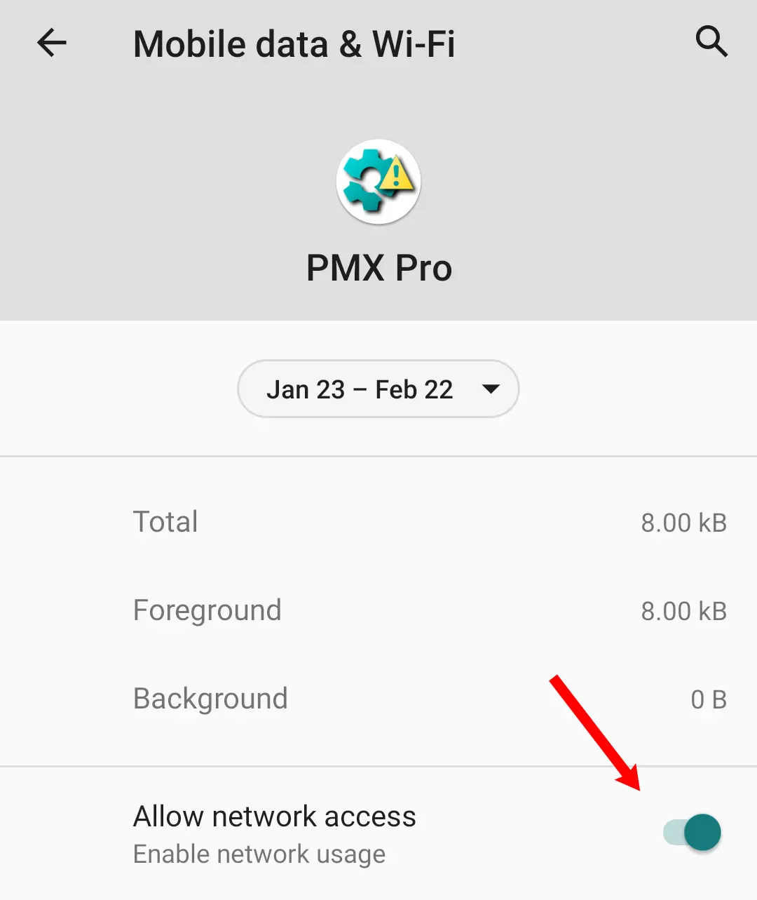This not only prevents the app from using internet but also disables its ability to create loopback sockets for IPC. So PMX won't be able to get root / ADB privileges if this permission is denied.
How much privacy friendly PMX is?
We are not interested in you or your device. PMX is open source. You can go through the source code on Github. There's nothing hidden from the end user. We believe in our users being educated and well-informed of why they are using PMX. We respect your privacy, so no data is collected ever, even the crash logs. You may also want to see our Privacy Policy.
Is PMX spying on me using ADB over network?
No.
PMX talks to adbd process over localhost (127.0.0.1). But there's no way to start adbd listen on localhsot only, and not on other network interfaces (because ADB is meant to be used externally from a PC). You can surely stop adbd listening from external IP addresses, if you can. PMX would still work, without any port being exposed externally.
Also you can change 5555 port to whatever number you want in Advanced Settings. It's not hard-coded.
Also ADB since Android 4.2 is meant to be protected with RSA key authentication (one of the strongest authentication mechanism). So even if the device is accessible from internet (which is highly unlikely), no one can make an ADB connection without authentication.
You can verify these claims in whatever way you want. We are here to assist you technically.
Is PMX misusing root privileges to collect my data?
We believe in the principle of the least privilege. But due to the restricted nature of Android operating system, PMX cannot function without having high privileges. What we can offer is, if you are a tech-savvy person, we can teach you how to make it difficult for apps to make internet connections, even with root privileges.
I think PMX is useless. Why was it created?
You are correct. PMX is not for everyone (and that's why it wasn't polished and released to public for years because we knew we've a very small audience). It's only for some extra tech-savvy souls who are extra-conscious about their privacy and device control. Majority of the phone users are just in the hands of their OEMs and app developers. They aren't aware of what's being done to them and their data. And it's fine.
Downloads / Screenshots
Please visit GitHub README.
Ratings / Reviews / Comments / Upvotes / Stars
Play Store • XDA • GitHub
Have more questions?
Please check More FAQs. Or contact us via email or Telegram.